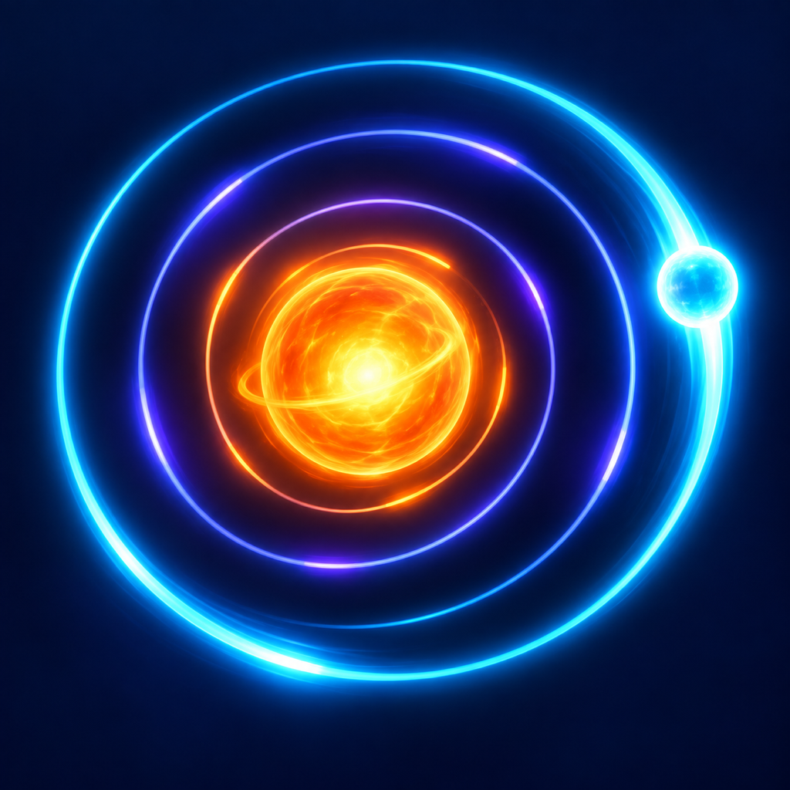

Track the signal
Objects circle toward your spark. A clear read is worth more than a rushed move.
OFFLINE ORBITAL REFLEX GAME
Shift between three orbital lanes, dodge incoming blockers, and collect relay shards before the signal reaches your spark.

Coming to the App Store See how it playsONE TOUCH. THREE LANES.
Objects circle toward your spark. A clear read is worth more than a rushed move.
Move inward or outward to catch bright shards and leave blockers behind.
Protect your signal until the timer ends, then unlock a faster, denser orbit.
PLAY COMES FIRST
Rewarded video is always your choice. Interstitial ads are limited to natural breaks between rounds. No banners, no ads over the playfield, and no reward is tied to tracking permission.